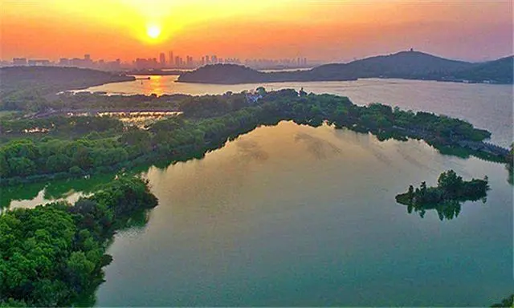
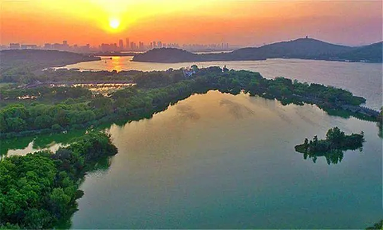

太湖
太湖位于长江三角洲的南缘，古称震泽、具区，又名五湖、笠泽，是中国五大淡水湖之一，位居第三，界北纬30°55'40"~31°32'58"和东经119°52'32"~120°36'10"之间，位于江苏省南部，北临江苏无锡，南濒浙江湖州，西依江苏常州、江苏宜兴，东近江苏苏州。由江苏省对太湖全境进行行政管辖。
太湖湖泊面积2427.8平方公里，水域面积为2338.1平方公里，湖岸线全长393.2公里。其西和西南侧为丘陵山地，东侧以平原及水网为主。
太湖地处亚热带，气候温和湿润，属季风气候。太湖河港纵横，河口众多，有主要进出河流50余条。
太湖是我国第三大淡水湖，周近400公里，湖中有大小岛屿48个，连同沿湖半岛山峰，共有72峰。 太湖横跨江苏、浙江两省，但作为风景区，最精华的部分则在无锡。游览太湖，一般都是游览位于太湖北部的无锡太湖风景区，其胜处又在鼋头渚。
物产资源
据《太湖鱼类志》记载，共有107种鱼类，录属于14目25科74属，其生态类型主要有三类：一是太湖定居性鱼类，如鲤、鲫、鳊、鲂、鮊、鲚和银鱼等；二是江海洄游性鱼类，如鳗鱼、鲥鱼和东方鲀等；三是江湖洄游性鱼类，如草、青、鲢和鳙鱼等。
由于受自然环境的改变以及人类经济活动的干扰，尤其是上个世纪50~60年代沿江和沿湖大量闸坝的兴建、60~70年代的“围湖造田”以及破坏性渔具渔法的使用，致使洄游和半洄游性鱼类以及沿岸带产卵的定居性鱼类资源数量减少，而湖泊敞水性低龄鱼种群数量在人为繁殖保护措施下逐步增加，形成以刀鲚、银鱼等为主体和年变幅较大的太湖鱼类资源格局。现太湖的主要经济鱼类资源有鲚、银鱼、鮊、鲤、鲫、团头鲂、草鱼、青鱼、鲢、鳙、鳗、花鱼骨、鲶、鳜、乌鳢、河川沙塘鳢和似刺鳊鮈等20余种。
地方特产包括：1.太湖三白即银鱼、白鱼、白虾。2.太湖珍珠，又名太湖珠。是按产地分类的九大珍珠品种之一。3.太湖蟹，生长于太湖水域，亦称螃蟹，其背壳坚隆凹纹似虎色青黑，腹青白色，腹下有脐，雄尖雌团，内有硬毛。
文化传说
相传，远在四千多年前，中国治水祖师夏禹奉舜帝姚重华之命在太湖治理水患，开凿了三条主要水道，东江、娄江、吴淞江，沟通了太湖与大海的渠道，将洪水疏导入海。这就是司马迁在《史记》中记载的“禹治水于吴，通渠三江五湖。”太湖水面辽阔，东西二百里，南北一百二十里，广为三万六千顷。
传说在很久很久以前的一天，王母娘娘要做寿了，玉皇大帝叫四大金刚抬去了一份厚礼。王母娘娘看见后，高兴的连嘴都合不拢了。原来玉皇大帝送的是一个大银盆，里面有72颗特大的翡翠，而且还有千姿百态的各种五色玉石雕凿的飞禽走兽，简直是一个聚宝盆；远远望去，还活像一只精致的大盆景呢，各路神仙都赞不绝。大家看过《西游记》都知道，王母娘娘设蟠桃会，没请弼马温，结果齐天大圣孙悟空发了脾气，大闹天宫。他见一样打一样，当他看见玉帝送的这只大银盆，也不管三七二十一，一棒打了下去，银盆便从天上落了下来，跌到地上砸了个大洞，银子便化作白花花的水，形成了三万六千顷的湖，因此湖是从天上掉下来的，“天”字上面的一横落在下面就为一点，也就是“太”字，所以此湖就叫“太湖”。72颗翡翠就成了72座山峰，分布在太湖中间。玉石雕刻的鱼，就是太湖里肌白如银、肉嫩味鲜的银鱼。玉石雕刻的飞禽，变成了对对鸳鸯。只有走兽没有活成。
主要景点
 

光福景区
阳羡景区
蠡湖景区
梅梁湖景区